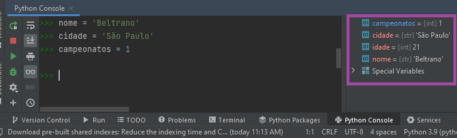
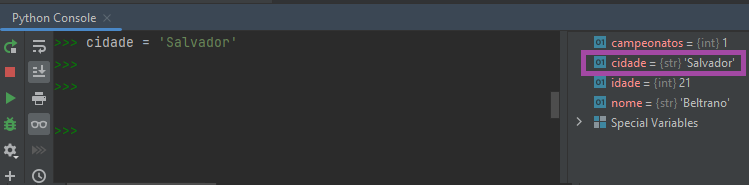
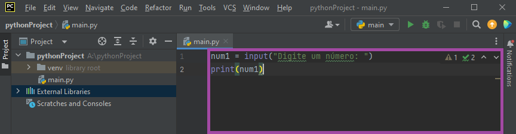
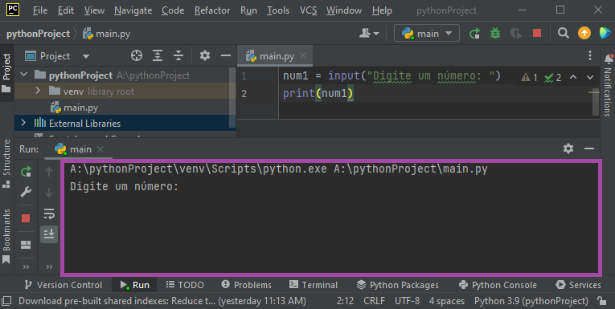
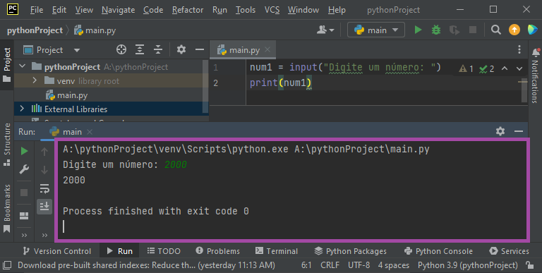

3 Variáveis e Entrada/Saída em Python
3.1 O que você saberá se você ler todo este capítulo?
- Você saberá usar as funções de entrada e saída de dados (
inputeprint) em Python. - Você saberá usar operadores aritméticos, de comparação e lógicos em Python.
- Você saberá formatar textos (strings) em Python.
- Você saberá como funcionam as variáveis em Python.
- Você também saberá como converter um tipo de dado em outro como, por exemplo, um número para texto e vice-versa.
🎓 Vindo do Capítulo 2? Perfeito! Você já entendeu a lógica de algoritmos e viu pseudocódigo. Agora é hora de PROGRAMAR DE VERDADE em Python! Este é o capítulo onde você finalmente escreve código que funciona.
🎯 Objetivo deste capítulo: Ao final, você será capaz de criar programas Python que interagem com o usuário, fazem cálculos e mostram resultados formatados. Vamos lá!
3.2 Saindo do pseudocódigo para o Python
Vamos supor que você quer construir uma casa. O pseudocódigo se aproxima à planta da casa: você não pode entrar nela e não pode fazer muita coisa de verdade com esta planta, mas ela serve como um bom ponto de partida e te dá uma boa ideia de como a casa deve funcionar, não é? Isto é: a planta te ajuda a entender o que falta/o que você precisaria pensar antes de construir a casa.
Já um algoritmo feito em Python se assemelha à casa construída. Você pode usar a casa (entrar e sair, morar, mobiliar, entre outros) como você quiser. Ela é um objeto real que existe e funciona. E, é claro: se você está aprendendo a montar casas, seria legal já seguir uma planta construída anteriormente, não é?
É por isso que comentamos antes sobre o pseudocódigo: colocar as suas ideias no papel com um pseudocódigo antes de trabalhar em Python o ajuda muito a pensar em algoritmos e a ganhar velocidade e aprendizagem. Além disso, ao conhecer o pseudocódigo é mais fácil de pensarmos em alguns exemplos antes de colocar a mão na massa no PyCharm.
💡 Dica importante: O pseudocódigo é como um “roteiro” para o seu programa. Ele te ajuda a organizar as ideias antes de começar a codificar. É como fazer um esboço antes de pintar um quadro!
Para isso, vamos usar como base aquele pseudocódigo que soma dois números e mostra para o usuário o resultado dessa soma:
Ora, como transcreveríamos este exemplo? O mesmíssimo algoritmo acima, mas escrito em Python, seria assim:
Agora, quais são as semelhanças e diferenças entre os dois algoritmos?
Diferenças principais:
- As palavras
InícioeFimsaíram de cena (Python não precisa delas) - A declaração de variáveis (
Inteiro: num1, num2, soma) não existe mais - Python cria variáveis automaticamente quando você usa elas Escrevavirouprint()- função para mostrar coisas na telaLeiavirouint(input())- função para ler o que o usuário digita
Semelhanças importantes:
- A ordem do algoritmo é mantida (pede primeiro número, depois segundo, depois soma)
- A organização das linhas é similar
- As mensagens são as mesmas
- A operação de soma funciona igual
💡 Por que isso é importante? Se você entende pseudocódigo, aprender Python fica muito mais fácil! É como já saber dirigir um carro manual e agora aprender a dirigir automático - muito mais simples!
Mas, e aí? Como testamos isso usando o PyCharm? Vamos testar aqui por partes, beleza?
⚠️ Atenção: A partir de agora vamos parar de usar o Console do PyCharm e começar a criar arquivos
.pyde verdade. É assim que os programadores profissionais trabalham!
3.3 Variáveis
💡 Conceito essencial: Variáveis são como “caixinhas” onde você guarda informações. Você dá um nome para a caixinha e coloca algo dentro. Depois, pode usar esse nome para acessar ou mudar o que está guardado!
Variáveis em Python são uma forma de armazenar dados em um programa, como números, textos, listas, entre outros. É como se fossem caixinhas onde podemos guardar valores que podem ser usados em diferentes partes do código.
Por que usar variáveis?
- Reutilização: Em vez de escrever
21várias vezes, você escreveidadeuma vez e usa sempre - Clareza:
idade = 21é muito mais claro que só21 - Facilidade: Se a idade mudar, você muda só em um lugar
Exemplo prático:
Teste o seguinte no Python Console do PyCharm. Ao final de cada linha, aperte Enter.
3.3.1 📋 Regras para Nomes de Variáveis
⚠️ Muito importante! Seguir estas regras evita erros e torna seu código mais profissional.
Regras obrigatórias (senão dá erro):
- ✅ Use letras, números e underscore
_ - ✅ Deve começar com letra ou
_(nunca com número) - ❌ NÃO use palavras reservadas do Python:
print,if,for,while,def,class, etc. - ❌ NÃO use espaços:
minha variavelminha_variavel - ❌ NÃO use caracteres especiais:
valor$,preço@
Boas práticas (recomendações):
- ✅ Use nomes descritivos:
idade_usuarioé melhor quexoua - ✅ Use minúsculas:
total_vendas(nãoTotalVendasouTOTAL_VENDAS) - ✅ Sem acentos:
salario(nãosalário) - ✅ Palavras compostas com
_:data_nascimento,preco_final
Exemplos:
| Nome | Válido? | Comentário |
|---|---|---|
idade |
✅ | Perfeito! |
idade_usuario |
✅ | Ótimo! Descritivo |
nota1 |
✅ | OK (número não está no início) |
_valor |
✅ | Válido (mas raro) |
1nota |
❌ | ERRO! Começa com número |
minha nota |
❌ | ERRO! Tem espaço |
for |
❌ | ERRO! Palavra reservada |
x |
✅ | Válido, mas péssimo nome |
💡 Dica profissional: Código é lido muito mais vezes do que escrito. Use nomes que você (e outros) entenderão daqui 6 meses!
Após digitar essas variáveis você irá perceber que elas vão sendo “salvas” na lista à esquerda. Isto quer dizer que estão armazenadas em memória e prontas para consultar e reaproveitar como quiser. Olha só:

Elas permanecerão salvas em memória até que você encerre o programa. Digite somente isso no console e aperte Enter:
Você verá que aparecerá o valor guardado para aquela variável (no caso, 21). Você pode fazer isso quantas vezes quiser e para as outras variáveis também.
💡 Dica: Quando você digita só o nome da variável no console, o Python mostra o valor dela. É como perguntar “o que tem dentro da gaveta ‘idade’?” e o Python responde “21”.
O que acha de testar um pouco?
Ah! Como o nome é variável, você poderia também variar (mudar) o valor delas se quiser. Veja o que acontece naquela lista à esquerda se você fizer isso e logo após apertar Enter:
Viu que o valor da cidade mudou?
💡 Importante: O nome da variável (
cidade) continua o mesmo, mas o valor dentro dela mudou de'São Paulo'para'Salvador'. É como trocar os papéis dentro da mesma gaveta!

cidade agora mostra o valor Salvador no PyCharm.Quer testar outras variáveis? Teste algumas (ou todas) no PyCharm:
nome = 'Maria'
idade = 25
altura = 1.65
peso = 60.5
estudante = True
frutas = ["maçã", "banana", "laranja"]
idade_gato = 2
cor = "azul"
preco = 9.99
estado_civil = 'solteiro'
data_nascimento = "12/08/2001"
pais = "Brasil"
email = "exemplo@gmail.com"
endereco = "Rua das Flores, 123"
quantidade = 10
velocidade = 50.0
codigo = 12345
possui_cachorro = False
salario = 2500.00
usuario = "123"
linguagens = ["Python", "Java", "C++", "Scala"]Percebeu algumas semelhanças e diferenças? Olha só:
1. Strings (tipo str) - textos:
nome,cor,estado_civil,data_nascimento,pais,email,endereco,usuario- Características: Valores entre aspas simples
'ou duplas" - Exemplo:
nome = 'Maria'ounome = "Maria"(ambos funcionam!)
2. Inteiros (tipo int) - números sem decimais:
idade,idade_gato,quantidade,codigo- Características: Números sem casas decimais, sem aspas
- Exemplo:
idade = 25(nãoidade = 25.0)
3. Decimais (tipo float) - números com decimais:
altura,peso,preco,velocidade,salario- Características: Números com ponto decimal (não vírgula!)
- Exemplo:
altura = 1.65(nãoaltura = 1,65)
4. Booleanos (tipo bool) - verdadeiro/falso:
estudante,possui_cachorro- Características: Só podem ser
TrueouFalse - Exemplo:
estudante = True
5. Listas - vários valores juntos:
frutas,linguagens- Características: Valores entre colchetes
[] - Exemplo:
frutas = ["maçã", "banana", "laranja"]
💡 Dica importante: Os nomes das variáveis seguem um padrão: minúsculas, sem acentos, sem espaços. Para palavras compostas, use
_(underscore). Exemplo:data_nascimento, nãodataNascimentooudata nascimento.
⚠️ Lembre-se: O símbolo
=significa “recebe” ou “atribui”. Quando você escrevepais = "Brasil", está dizendo “a variávelpaisrecebe o valorBrasil”.
3.3.2 Constantes
Se não quisermos que um valor seja alterado (como o valor de \(\pi\), que nunca mudaria) trabalharíamos com constantes. O uso de constantes é bem comum em outras linguagens de programação, como C e Java, mas o conceito de constantes não existe em Python.
Dito isso, por convenção e por boa prática é comum nomear variáveis que não devem ser alteradas e que deveriam ser entendidas como constantes usando letras maiúsculas e underscores (_). Essa convenção é mais uma forma de deixar o código mais legível para os desenvolvedores, indicando que determinada variável não deve ser alterada durante a execução do programa.
Veja os exemplos abaixo. Ainda são variáveis, mas devem ser interpretadas como desenvolvedores como sendo constantes.
Dito isso, vale lembrar que essa convenção não impede que essas variáveis sejam alteradas por engano ou por uma falha no código.
3.4 Operadores
Aquele sinal de = que acabamos de ver é um exemplo de operador: é um símbolo que existe para fazer algum tipo de operação (somar, guardar algum valor, subtrair, dividir, comparar, etc.) com valores e variáveis.
💡 Analogia: Operadores são como ferramentas. Você usa uma chave de fenda para parafusos, um martelo para pregos, e operadores Python para manipular dados!
Tipos de operadores que vamos ver:
- Aritméticos - fazem cálculos matemáticos
- Comparação - comparam valores (maior, menor, igual…)
- Lógicos - combinam condições (e, ou, não)
- Atribuição - guardam valores em variáveis (o
=que já conhecemos)
3.4.1 Operadores aritméticos
No seu Python Console do PyCharm, crie duas novas variáveis:
Os operadores aritméticos são usados para realizar operações matemáticas básicas, como adição (+), subtração (-), multiplicação (*), divisão (/), módulo (ou resto da divisão, símbolo %) e exponenciação (**).
Teste os seguintes comandos e veja os resultados. Não preciso dizer que você precisa apertar Enter no final de cada comando, né?
Os resultados devem ser, respectivamente: 8, -2, 15, 0.6, 3 e 243. Faz sentido com a matemática básica, não é? Agora teste:
Aparecerá OiTchau na tela. Em Python, é possível usarmos o símbolo de + para concatenar (juntar) textos, também.
3.4.2 Operadores de comparação
Se os operadores aritméticos fazem operações aritméticas, então os de comparação… Adivinha? Exato: eles comparam. Esses operadores servem para fazer comparações entre valores e variáveis para retornar True se aquela comparação for verdadeira e False se não for. Vamos usar as mesmas variáveis acima para testar lá no Python Console:
Você deve ter visto que para cada uma das linhas apareceu True ou False como resultado, não é? Vamos ver caso-a-caso o que cada um desses exemplos querem dizer.
Nesse caso, o == é um operador de igualdade. Ele compara se num1 é exatamente igual a num2. Se forem números, compara se o valor deles é igual. Se forem strings, compara se o conteúdo do texto é exatamente igual, diferenciando maiúsculas de minúsculas. O resultado aqui foi False porque 3 é diferente de 5. Se eles fossem iguais, o resultado seria True.
Já o != é um operador de desigualdade. Como você já deve imaginar, ele funciona ao contrário do ==. Ou seja: ele retornará True se as duas variáveis ou valores sendo comparados forem diferentes e False se forem iguais. Como 3 é diferente de 5 o resultado foi True.
Estes quatro operadores permitem comparar dois valores ou variáveis e retornar um resultado verdadeiro ou falso (booleano) dependendo do resultado da comparação.
O operador > é usado para verificar se o valor ou a variável do lado esquerdo é maior que o valor ou variável do lado direito. O operador >= verifica se o valor ou variável do lado esquerdo é maior ou igual ao valor ou variável do lado direito. O operador < verifica se o valor ou a variável do lado esquerdo é menor que o valor ou a variável do lado direito, enquanto o operador <= verifica se o valor ou a variável do lado esquerdo é menor ou igual ao valor ou variável do lado direito. Esses operadores são amplamente utilizados em estruturas de controle, como declarações condicionais e loops.
Como 3 é menor (e menor ou igual) a 5, os dois primeiros testes resultam em False e os dois últimos em True.
O in e not in são variáveis de pertencimento. O in poderia ser traduzido como “está dentro de”, enquanto que not in poderia ser traduzido como “não está dentro de”.
Como o texto au está dentro de Tchau, o primeiro comando retornou True. Como as comparações diferenciam letras maiúsculas de minúsculas, o segundo comando retornou False (afinal, a letra A em maiúsculo não está no texto). Finalmente, o último comando retornou False porque não é verdade que o au não esteja dentro de Tchau.
3.4.3 Operadores lógicos
São operadores para realizarem comparações lógicas. Antes de pensarmos em alguns exemplos em Python vale pensarmos um pouco em exemplos de lógica booleana (ou lógica binária).
3.4.3.1 Negação (not)
Vamos supor que você está seguindo uma receita de bolo que diz “adicione uma colher de açúcar”. Se você quer fazer uma negação dessa instrução, significa que você quer fazer o oposto do que está sendo dito. Nesse caso, a negação seria “não adicione uma colher de açúcar”. Isso significa que você vai ignorar a instrução original e não vai adicionar açúcar na massa do bolo.
Outro exemplo seria se a receita dissesse “pré-aqueça o forno a 180 graus Celsius”. A negação seria “não pré-aqueça o forno a 180 graus Celsius”, o que significa que você não deve aquecer o forno antes de colocar o bolo para assar.
A negação é um dos operadores booleanos em Python e é representada com a palavra-chave not. O not inverte o valor de uma expressão booleana, ou seja, se a expressão for verdadeira, ele a torna falsa e vice-versa.
3.4.3.2 Ou lógico (or)
Agora, pensemos que você está seguindo uma receita de bolo e a receita diz que você pode usar açúcar cristal ou açúcar refinado para fazer a massa. Nesse caso, o “ou” lógico é utilizado, pois você pode escolher usar um tipo de açúcar ou outro para fazer a receita. Você pode fazer a receita sem problemas se tiver só açúcar cristal, se tiver só açúcar refinado, ou se tiver os dois. Agora, você não poderia fazer a receita se não tivesse nenhum desses dois tipos.
Outro exemplo de “ou” lógico seria em uma receita que diz para usar manteiga ou margarina. Nesse caso, você pode escolher usar uma das opções para fazer a receita. Você pode fazer o bolo com manteiga, o bolo com margarina, ou o bolo misturando os dois (apesar de que isso seria estranho).
Em Python, este “ou” lógico é representado pela palavra-chave or, que testa se pelo menos uma das expressões booleanas é verdadeira.
3.4.3.3 E lógico (and)
Vamos supor que para preparar uma receita de bolo é necessário ter tanto açúcar quanto farinha de trigo. Se eu disser que é preciso ter açúcar e farinha de trigo para fazer a receita, isso significa que se faltar qualquer um desses ingredientes, o bolo não poderá ser feito. Ou seja, as duas condições precisam ser verdadeiras para que o resultado final seja verdadeiro.
Por exemplo, se eu disser que “para fazer a receita de bolo é necessário ter açúcar e farinha de trigo”, e se eu tiver apenas açúcar mas não tiver farinha de trigo, a condição não será satisfeita e o resultado será falso (ou seja: sem bolo). Apenas quando eu tiver ambos os ingredientes – açúcar e farinha de trigo – é que a condição será satisfeita e o resultado será verdadeiro, permitindo assim que eu faça o bolo.
Em Python, o “e” lógico é representado pela palavra-chave and, e precisa que todas as condições sejam verdadeiras para que o resultado seja True. Caso contrário, retornará False.
3.4.3.4 Resumindo
- E lógico (
and):True and Falseresulta emFalse. - Ou lógico (
or):True or Falseresulta emTrue. - Não lógico (
not):not Trueresulta emFalse.
Vamos voltar no Python Console lá do PyCharm? Teste as seguintes variáveis:
A primeira resulta em True porque 3 é diferente de 5. Logo, num1 == num2 resultou em False. Como estamos invertendo o resultado com o not, este False vira True.
A segunda resulta em False porque a primeira comparação resulta em True (3 é diferente de 5), mas a segunda comparação resulta em False (3 não é maior do que 5). Como o and requer que ambos sejam verdadeiros para que o resultado também seja verdade, o resultado desta comparação deu False.
A terceira resulta em True porque somente uma das comparações precisa ser verdadeira para que o resultado seja True. A segunda comparação possui o resultado False, mas a primeira obedece é verdadeira e, por isso, o resultado da comparação é True.
A quarta comparação resulta em True porque a primeira parte da expressão é num1 != num2. Como o valor de num1 é 3 e o valor de num2 é 5, essa comparação resulta em True.
Em seguida, a expressão utiliza o operador and para combinar essa comparação com a próxima, que é not num1 > num2. Essa segunda parte compara se num1 não é maior que num2. Como num1 é menor que num2, essa comparação resulta em False. No entanto, a expressão utiliza o operador not para negar esse resultado e obter True.
Por fim, o operador and combina esses dois resultados. Como a primeira parte resultou em True e a segunda em True, o resultado final da expressão é True.
Já a quinta e última comparação resulta em True porque o resultado das duas comparações é True: num1 != num2 é verdade (3 é diferente de 5) e num1 < num2 também é verdade (3 é menor do que 5).
{#python:inputprint}
3.5 input e print
Em termos simples, quando estamos escrevendo um código em Python, podemos querer que ele faça algumas coisas como, por exemplo, ler um arquivo, ler coisas que o usuário digitou, ou mostrar alguma informação na tela do computador. A leitura de informações que o usuário forneceu e a exibição de informações na tela são exemplos de entrada e saída (input e output, ou I/O) do nosso algoritmo.
Quando escrevemos um algoritmo, é importante que ele consiga se comunicar com o mundo exterior para coletar e enviar informações. Por exemplo, se quisermos fazer um programa que calcule a média de notas de um aluno, precisamos permitir que o usuário insira as notas. Isso é entrada (input) do programa. E quando o programa calcular a média, ele precisará exibir o resultado ao usuário, que é a saída (output) do programa.
Mensagem para agora: as funções básicas de I/O em Python são a
input()eprint(), e é com elas que você irá trabalhar inicialmente.
A função input() é uma função do Python que permite ao usuário inserir informações em um programa. Ela é como uma caixa de texto na qual o usuário pode digitar alguma coisa e, em seguida, o programa usa essa informação para realizar alguma ação. É como quando alguém te pede uma informação e você responde falando com essa pessoa. No caso da função input(), o programa é quem faz a pergunta e espera pela resposta do usuário. Depois que o usuário digita a resposta e pressiona Enter, o programa recebe essa informação e pode utilizá-la da forma que foi programada. É uma maneira muito útil de fazer com que o usuário interaja com o programa.
Já a função print() em Python é usada para mostrar mensagens na tela do computador. É como se fosse uma impressora que escreve na tela do seu computador em vez de em um pedaço de papel. Com ela, é possível imprimir (na tela ou em um arquivo) textos, números e até mesmo variáveis que foram definidas no seu programa.
Ela é utilizada para que o código possa exibir informações para o usuário, como resultados de cálculos, mensagens de erro, instruções de uso, entre outros. Essa função permite que o usuário possa visualizar os resultados gerados pelo código, tornando-o mais interativo e amigável. O resultado dessa função é a exibição das informações na tela ou em um arquivo de texto.
Lembra daquele exemplo da soma de dois números que vimos no início do capítulo? Vamos usar ele como base para estudarmos e testarmos as funções input() e print(), beleza?
👉 A partir de agora nós vamos deixar de usar o Python Console e vamos começar a trabalhar com um arquivo com o código em Python. Lembra quando estávamos trabalhando com o
main.pynos capítulos anteriores para fazer aquele exemplo do Counter-Strike? Vamos voltar a usar aquele arquivo. Da mesma forma que você tem um arquivo chamadomain.pyvocê pode criar outros arquivos comoteste.py,projeto.pye outros nomes.
No PyCharm, deixe o seu código somente com isso, e rode ele (lembra do Run que já tínhamos visto anteriormente, né?):

Se você mandou rodar, provavelmente só verá esta mensagem. Ao usar a função input(), o programa pausa sua execução e aguarda a entrada de dados pelo usuário, que deve pressionar a tecla Enter para confirmar sua entrada. Ou seja: ele ficará parado aí até que você digite alguma coisa e aperte Enter.

Experimente digitar algum valor, como 2000. Em seguida, aperte Enter. Veja que apareceu exatamente o que você digitou na linha abaixo (no caso, o valor 2000) e, logo após isso, a frase Process finished with exit code 0. Em bom português, essa frase poderia ser interpretada como Seu programa finalizou de boas, sem erro nenhum.

Agora, por que aquele 2000 apareceu repetido logo depois de você ter digitado ele? Esse algoritmo solicita que o usuário digite um número (com o uso da função input()) e guarda o valor digitado na variável chamada num1. Em seguida, o print() é utilizado para mostrar na tela o valor armazenado em num1.
Essas funções (a input() e print()) fazem parte ed um conjunto de instruções que o Python já tem prontas para realizar algumas tarefas, como receber uma entrada do usuário ou exibir informações na tela do computador. Dentro delas existem algoritmos especializados e prontos especialmente para estas tarefas.
Para utilizar essas funções, você pode ter percebido que fomos obrigados a escrever o nome delas seguido de parênteses. Os parênteses servem para indicar que estamos chamando a função, ou seja, pedindo para que ela seja executada. Além disso, dentro dos parênteses podemos passar informações para a função, como textos ou variáveis, para que ela possa realizar a tarefa que queremos.
Por exemplo, no código num1 = input("Digite um número: "), a função input() é chamada e o texto Digite um número: é passado como um argumento para ela, indicando que queremos que o usuário digite um número. A função retorna a entrada do usuário, que é armazenada na variável num1. Em seguida, a função print() é chamada, passando a variável num1 como argumento dentro dos parênteses para que ela exiba o valor armazenado nessa variável na tela do computador.
Que tal testarmos uma pequena mudança no print? Mude o código para isso:
Agora, teste com o mesmo número 2000. 2000 + 2000 é igual a 4000, certo? Então teste aí. Você pode ter percebido que o resultado foi 20002000. Por que isso? Todos os dados que você digita e que o input() captura são tratados como uma string (texto), mesmo que sejam números. E, como vimos anteriormente, o + em textos possui a função de concatená-los. Ou seja: o Python entendeu que você estava querendo juntar um texto chamado “2000” com outro texto chamado “2000”, e ele não tinha nenhuma ideia de que isso, na verdade, era um número.
Para converter esses dados em outros tipos de dados, como int ou float, é necessário usar as funções de conversão de tipos de dados.
3.6 int, float e str
3.7 Formatação de strings
🎯 TL;DR (Resumo): Existem 4 jeitos de formatar strings em Python. Use f-strings (Jeito 2)! É o jeito mais moderno, legível e recomendado desde Python 3.6+. Os outros jeitos estão aqui para você entender código antigo que encontrar por aí.
Comparação Rápida:
| Jeito | Exemplo | Recomendação |
|---|---|---|
1. Concatenação (+) |
"Olá " + nome + "!" |
❌ Evite (verboso, erros) |
| 2. F-strings | f"Olá {nome}!" |
✅ USE ESTE! |
3. .format() |
"Olá {}!".format(nome) |
⚠️ OK, mas f-string é melhor |
4. .format() com índices |
"Olá {0}!".format(nome) |
⚠️ Código antigo |
O resultado da função input() é sempre um texto. Também pode ser que você esteja manipulando dados de outra fonte (como um arquivo) e que também aquilo seja lido como um texto. Por outro lado, você pode precisar converter aquele texto para um número para fazer operações como soma, divisão, comparações, e assim por diante.
É para isso que servem as funções int() (que converte um valor de outro tipo para um número inteiro), float() (que converte um valor de outro tipo para um número decimal), e str() (que converte um número ou um valor de outro tipo para um texto). Modifique o código que tínhamos para adicionar o int. O seu código deve parecer com o código abaixo. Rode ele e teste novamente com o número 2000.
Agora apareceu corretamente o 4000 como resultado da soma, não é? Funciona assim: na primeira linha, a função input() exibe na tela a mensagem Digite um número: para que o usuário possa digitar o valor desejado. Sabemos disso porque o conteúdo dos parênteses mais internos é avaliado primeiro, e depois é avaliado o conteúdo dos parênteses mais externos. Isso ajuda a definir a ordem em que as operações matemáticas devem ser executadas em uma expressão, evitando assim ambiguidades. Assim que o usuário digita 2000, esse texto é convertido em um número inteiro pela função int() e armazenado na variável num1.
Na segunda linha, há uma exibição na tela do resultado da soma da variável num1 com ela mesma. Isso é feito com o uso da função print(), que exibe na tela o valor passado entre parênteses (ou seja: o resultado da soma).
Antes de avançarmos, teste este mesmo algoritmo com outro número. Primeiro, teste o algoritmo com 9.78 no lugar de 2000. Você verá que apareceu um erro assim:
ValueError: invalid literal for int() with base 10: '9.78'
Isto acontece porque ele esperava um número inteiro e você acabou digitando um número com casas decimais. Veja que o próprio erro te diz isso: que o número que você digitou não é um inteiro. Erros assim podem acontecer enquanto desenvolvemos e testamos algoritmos. Para te ajudar, também criei uma seção com os tratamentos mais comuns aos erros de código para você.
Se quiséssemos que o nosso código funcionasse com números decimais bastaria substituir o int() por float(), ficando assim:
Teste de novo, e você verá a mágica acontecer. Da mesma forma, o str() pode ser útil em outros momentos para convertermos números de volta para texto. Agora, vamos continuar testando o uso do print() e do input(). Como seria para fazermos a soma de dois números diferentes digitados pelo usuário? Ora, bastaria criarmos uma segunda variável (num2) e pedirmos para o usuário digitar um segundo número. No final, teríamos a soma de num1 e num2. Olha só:
Também poderíamos mostrar alguma mensagem antes de chamarmos o input(). O código abaixo faz a mesmíssima coisa do que o código anterior, mas com um uso um pouco diferente. Consegue ver as semelhanças e diferenças?
Também poderíamos criar uma variável chamada soma para guardar o resultado da soma. Veja e teste:
3.8 Formatação de strings
Agora, e se quiséssemos mostrar um texto um pouco mais bonito do que somente aquele valor? E se quiséssemos mostrar uma mensagem personalizada dentro daquele print()? É aí que entra a formatação de texto. A formatação de texto serve mostrar informações de uma maneira organizada e legível, e que permite criar mensagens personalizadas e dinâmicas de acordo com as entradas do usuário ou resultados de cálculos.
Com a formatação de texto, poderíamos criar um modelo de mensagem com espaços reservados para as informações fornecidas pelo usuário, como Olá, $NOME. Você tem $IDADE anos!, onde $NOME e $IDADE são valores que podem variar de pessoa para pessoa. Durante a execução do seu código, as informações reais serão inseridas nos espaços reservados, criando uma mensagem personalizada para cada usuário.
Existem alguns jeitos de fazermos isso em Python. A formatação de texto em Python pode ser feita de algumas formas diferentes. Vamos usar o mesmo exemplo acima para continuar, beleza?
Vamos supor que queiramos mostrar uma mensagem chamada “A soma dos números $PRIMEIRONUMERO e $SEGUNDONUMERO é: $SOMA”. Por exemplo: se o usuário digitar 5 e 3, deve aparecer uma mensagem chamada “A soma dos números 3 e 5 é: 8. Se ele digitar 2000 e -10, deve aparecer ”A soma dos números 2000 e -10 é: 1990. Bom, acho que você já pegou a ideia do que queremos, né?
3.8.1 Jeito 1: concatenando strings
Lembra de que comentei que o + serve para concatenar strings? Teste o seguinte código:
Veja que na última linha usamos o sinal de + para juntar pedaços diferentes do texto. Ou seja: começamos a montar uma frase chamada A soma dos números e, em seguida, juntamos com o valor que está dentro da variável num1. Depois, juntamos com mais um texto (e) e assim sucessivamente até chegar na frase completa.
Também perceba que usamos o str(). Isto é necessário converter as variáveis num1 e num2 em strings usando a função str() antes de concatená-las com as demais strings na função print(). Isto acontece porque o Python não permite juntar texto com números: ou juntamos número com número, ou texto com texto. Por isso, tivemos que converter os números das três variáveis de volta para um texto com o str().
3.8.2 Jeito 2: usando f-strings
As f-strings permitem que você inclua valores de variáveis diretamente dentro de strings sem precisar concatenar (unir) vários elementos. Para criar uma f-string, basta inserir a letra f antes das aspas da string e, em seguida, colocar as chaves ({}) em torno do nome da variável que você deseja incluir.
Teste o seguinte código:
Neste exemplo, as variáveis num1, num2 e soma são colocadas dentro da string entre chaves {} na última linha, indicando que elas serão substituídas pelos seus respectivos valores assim que o Python executar aquela linha. Veja que só podemos usar variáveis que existem aqui: se tentarmos colocar também uma variável chamada num3 na última linha teremos um erro já que ela nunca apareceu em nenhum lugar antes do código.
3.8.3 Jeito 3: usando placeholders
Agora, vamos usar a função format() para formatar uma string de saída que contém os valores das variáveis num1, num2 e soma. Os valores são inseridos na string usando chaves {} como marcadores de posição: é como se falássemos assim: “troque o valor das primeiras chaves com o primeiro valor que está lá no format (num1), as segundas chaves com o segundo valor (num2) e as terceiras chaves com o terceiro valor (soma)”. Por isso, a ordem das chaves determina a ordem dos argumentos passados para a função format().
Experimente trocar a ordem do que está dentro do format(), colocando o soma em primeiro lugar. Veja que a frase final deixará de fazer sentido por isso.
3.8.4 Jeito 4: usando format()
Também existe uma forma de “demarcar” a posição de cada elemento do format no texto. Teste o código abaixo:
A última linha desse código ainda usa a função format(). Veja que o que mudou foi a ordem do que está dentro do format(). As chaves ({}) ainda servem como marcadores de posição, e agora estão numeradas de 0 a 2. O primeiro argumento passado para a função format() é o valor que deve ser atribuído à posição 0, ou seja, o resultado da soma, representado pela variável soma. Em seguida, os valores das variáveis num1 e num2 são passados como segundo e terceiro argumentos, respectivamente, para serem atribuídos às posições 1 e 2 da mensagem.
Assim, o método format() faz a substituição dos marcadores de posição pelos valores passados como argumentos obedecendo a ordem que você determinou.
3.9 Exercícios Práticos (respostas no final da página)
💡 Dica: Todos os exercícios podem ser resolvidos com o que você aprendeu até agora. Use f-strings para criar mensagens bonitas e não se esqueça de converter tipos quando necessário!
3.9.1 MUITO FÁCIL (Nível 1)
1. Saudação Personalizada Crie um programa que pede o nome do usuário e mostra uma mensagem de boas-vindas.
- Exemplo: Usuário digita
Maria→ Programa mostra"Olá, Maria! Bem-vinda ao mundo Python!"
2. Calculadora Simples Crie um programa que pede dois números e mostra a soma deles.
- Exemplo: Usuário digita
5e3→ Programa mostra"5 + 3 = 8"
3. Dobro de um Número Crie um programa que pede um número e mostra o dobro dele.
- Exemplo: Usuário digita
7→ Programa mostra"O dobro de 7 é 14"
4. Perímetro do Quadrado Crie um programa que pede o lado de um quadrado e mostra o perímetro.
- Exemplo: Usuário digita
4→ Programa mostra"O perímetro é 16"
5. Conversão de Idade Crie um programa que pede a idade em anos e mostra quantos dias aproximadamente a pessoa já viveu.
- Exemplo: Usuário digita
20→ Programa mostra"Você já viveu aproximadamente 7300 dias"
3.9.2 FÁCIL (Nível 2)
6. Verificador de Paridade Crie um programa que pede um número inteiro e diz se é par ou ímpar.
- Exemplo: Usuário digita
7→ Programa mostra"7 é ímpar"
7. Verificador de Positivo/Negativo Crie um programa que pede um número e diz se é positivo, negativo ou zero.
- Exemplo: Usuário digita
-5→ Programa mostra"-5 é negativo"
8. Calculadora de Área Crie um programa que pede largura e altura de um retângulo e mostra a área.
- Exemplo: Usuário digita
5e3→ Programa mostra"A área é 15"
9. Conversor de Temperatura Crie um programa que converte Celsius para Fahrenheit.
- Exemplo: Usuário digita
25→ Programa mostra"25°C = 77°F"
10. Calculadora de IMC Crie um programa que calcula o IMC (Índice de Massa Corporal).
- Exemplo: Usuário digita altura
1.70e peso65→ Programa mostra"Seu IMC é 22.49"
3.9.3 MÉDIO (Nível 3)
11. Calculadora Completa Crie um programa que pede dois números e mostra todas as operações básicas.
- Exemplo: Usuário digita
10e3→ Programa mostra soma, subtração, multiplicação e divisão
12. Verificador de Maioridade Crie um programa que pede a idade e diz se a pessoa é maior ou menor de idade.
- Exemplo: Usuário digita
17→ Programa mostra"Você é menor de idade"
13. Calculadora de Desconto Crie um programa que pede o preço de um produto e a porcentagem de desconto, depois mostra o preço final.
- Exemplo: Usuário digita preço
100e desconto20→ Programa mostra"Preço final: R$ 80.00"
14. Verificador de Triângulo Crie um programa que pede três lados e diz se podem formar um triângulo.
- Exemplo: Usuário digita
3, 4, 5→ Programa mostra"Podem formar um triângulo"
15. Calculadora de Juros Simples Crie um programa que calcula juros simples (J = C * i * t).
- Exemplo: Usuário digita capital
1000, taxa0.05, tempo2→ Programa mostra"Juros: R$ 100.00"
3.9.4 DIFÍCIL (Nível 4)
16. Verificador de Ano Bissexto Crie um programa que pede um ano e diz se é bissexto ou não.
- Exemplo: Usuário digita
2024→ Programa mostra"2024 é bissexto"
17. Calculadora de Média Ponderada Crie um programa que pede 3 notas e seus pesos, depois calcula a média ponderada.
- Exemplo: Usuário digita notas
8, 7, 9e pesos2, 3, 1→ Programa mostra a média
18. Verificador de Número Primo Crie um programa que pede um número e diz se é primo ou não.
- Exemplo: Usuário digita
17→ Programa mostra"17 é primo"
19. Calculadora de Combustível Crie um programa que pede distância, consumo do carro e preço do combustível, depois mostra o custo da viagem.
- Exemplo: Usuário digita distância
300, consumo12, preço5.50→ Programa mostra o custo
20. Verificador de Palíndromo Crie um programa que pede uma palavra e diz se é palíndromo (lê-se igual de trás para frente).
- Exemplo: Usuário pipa
arara→ Programa mostra"arara é palíndromo"
3.9.5 MUITO DIFÍCIL (Nível 5)
21. Calculadora de Fibonacci Crie um programa que pede um número n e mostra os primeiros n números da sequência de Fibonacci.
- Exemplo: Usuário digita
8→ Programa mostra"0, 1, 1, 2, 3, 5, 8, 13"
22. Verificador de Número Perfeito Crie um programa que pede um número e diz se é perfeito (soma dos divisores = número).
- Exemplo: Usuário digita
6→ Programa mostra"6 é perfeito"
23. Calculadora de Fatorial Crie um programa que pede um número e calcula o fatorial.
- Exemplo: Usuário digita
5→ Programa mostra"5! = 120"
24. Verificador de Número Armstrong Crie um programa que pede um número de 3 dígitos e diz se é Armstrong (soma dos cubos dos dígitos = número).
- Exemplo: Usuário digita
153→ Programa mostra"153 é Armstrong"
25. Calculadora de Equação do 2º Grau Crie um programa que pede os coeficientes a, b, c e calcula as raízes da equação ax² + bx + c = 0.
- Exemplo: Usuário digita
1, -5, 6→ Programa mostra"Raízes: 2 e 3"
⚠️ Importante: É provável que você encontre alguns erros no caminho. Fique tranquilo! Isso é normal quando estamos aprendendo. Se precisar de ajuda com erros comuns, consulte a seção de tratamento de erros.
3.9.6 Respostas e Explicações
💡 Importante: Estas são apenas algumas das possíveis soluções. Seu código pode ser diferente e ainda estar correto! O importante é que funcione e faça sentido para você.
3.9.6.1 MUITO FÁCIL (Nível 1)
1. Saudação Personalizada
Explicação linha por linha:
- Linha 2:
nome = input("Digite seu nome: ")- Pede para o usuário digitar o nome e guarda na variávelnome - Linha 5:
print(f"Olá, {nome}! Bem-vinda ao mundo Python!")- Usa f-string para criar uma mensagem personalizada com o nome digitado
2. Calculadora Simples
Explicação linha por linha:
- Linha 2:
num1 = int(input("Digite o primeiro número: "))- Pede o primeiro número e converte para inteiro - Linha 3:
num2 = int(input("Digite o segundo número: "))- Pede o segundo número e converte para inteiro - Linha 6:
soma = num1 + num2- Calcula a soma dos dois números - Linha 7:
print(f"{num1} + {num2} = {soma}")- Mostra o resultado formatado
3. Dobro de um Número
Explicação linha por linha:
- Linha 2:
numero = float(input("Digite um número: "))- Pede um número e converte para float (aceita decimais) - Linha 5:
dobro = numero * 2- Calcula o dobro multiplicando por 2 - Linha 6:
print(f"O dobro de {numero} é {dobro}")- Mostra o resultado formatado
3.9.6.2 FÁCIL (Nível 2)
6. Verificador de Paridade
Explicação linha por linha:
- Linha 2:
numero = int(input("Digite um número inteiro: "))- Pede um número e converte para inteiro - Linha 5:
if numero % 2 == 0:- Verifica se o resto da divisão por 2 é zero (número par) - Linha 6:
print(f"{numero} é par")- Se for par, mostra esta mensagem - Linha 7:
else:- Caso contrário (se não for par) - Linha 8:
print(f"{numero} é ímpar")- Mostra que é ímpar
7. Verificador de Positivo/Negativo
Explicação linha por linha:
- Linha 2:
numero = float(input("Digite um número: "))- Pede um número e converte para float - Linha 5:
if numero > 0:- Verifica se o número é maior que zero - Linha 6:
print(f"{numero} é positivo")- Se for maior que zero, é positivo - Linha 7:
elif numero < 0:- Senão, se for menor que zero - Linha 8:
print(f"{numero} é negativo")- É negativo - Linha 9:
else:- Caso contrário (nem positivo nem negativo) - Linha 10:
print(f"{numero} é zero")- É zero
8. Calculadora de Área
Explicação linha por linha:
- Linha 2:
largura = float(input("Digite a largura: "))- Pede a largura e converte para float - Linha 3:
altura = float(input("Digite a altura: "))- Pede a altura e converte para float - Linha 6:
area = largura * altura- Calcula a área multiplicando largura pela altura - Linha 9:
print(f"A área é {area}")- Mostra o resultado formatado
3.9.6.3 MÉDIO (Nível 3)
9. Conversor de Temperatura
# Solicita temperatura e escala
temp = float(input("Digite a temperatura: "))
escala = input("Digite a escala (C/F): ").upper()
# Converte baseado na escala
if escala == "C":
fahrenheit = (temp * 9/5) + 32
print(f"{temp}°C = {fahrenheit:.1f}°F")
elif escala == "F":
celsius = (temp - 32) * 5/9
print(f"{temp}°F = {celsius:.1f}°C")
else:
print("Escala inválida!")Explicação linha por linha:
- Linha 2:
temp = float(input("Digite a temperatura: "))- Pede temperatura e converte para float - Linha 3:
escala = input("Digite a escala (C/F): ").upper()- Pede escala e converte para maiúscula - Linha 6:
if escala == "C":- Verifica se é Celsius - Linha 7:
fahrenheit = (temp * 9/5) + 32- Converte Celsius para Fahrenheit - Linha 8:
print(f"{temp}°C = {fahrenheit:.1f}°F")- Mostra resultado formatado - Linha 9:
elif escala == "F":- Senão, se for Fahrenheit - Linha 10:
celsius = (temp - 32) * 5/9- Converte Fahrenheit para Celsius - Linha 11:
print(f"{temp}°F = {celsius:.1f}°C")- Mostra resultado formatado
10. Calculadora de IMC
# Solicita peso e altura
peso = float(input("Digite seu peso (kg): "))
altura = float(input("Digite sua altura (m): "))
# Calcula IMC
imc = peso / (altura ** 2)
# Classifica IMC
if imc < 18.5:
classificacao = "Abaixo do peso"
elif imc < 25:
classificacao = "Peso normal"
elif imc < 30:
classificacao = "Sobrepeso"
else:
classificacao = "Obesidade"
print(f"Seu IMC é {imc:.1f} - {classificacao}")Explicação linha por linha:
- Linha 2:
peso = float(input("Digite seu peso (kg): "))- Pede peso e converte para float - Linha 3:
altura = float(input("Digite sua altura (m): "))- Pede altura e converte para float - Linha 6:
imc = peso / (altura ** 2)- Calcula IMC (peso dividido pela altura ao quadrado) - Linha 9:
if imc < 18.5:- Verifica se está abaixo do peso - Linha 10:
classificacao = "Abaixo do peso"- Define classificação - Linha 11:
elif imc < 25:- Senão, se está no peso normal - Linha 12:
classificacao = "Peso normal"- Define classificação - Linha 13:
elif imc < 30:- Senão, se está com sobrepeso - Linha 14:
classificacao = "Sobrepeso"- Define classificação - Linha 15:
else:- Caso contrário - Linha 16:
classificacao = "Obesidade"- Define classificação - Linha 18:
print(f"Seu IMC é {imc:.1f} - {classificacao}")- Mostra resultado formatado
11. Verificador de Ano Bissexto
Explicação linha por linha:
- Linha 2:
ano = int(input("Digite um ano: "))- Pede ano e converte para inteiro - Linha 5:
if (ano % 4 == 0 and ano % 100 != 0) or (ano % 400 == 0):- Verifica condições para ano bissexto - Linha 6:
print(f"{ano} é bissexto")- Se for bissexto, mostra esta mensagem - Linha 7:
else:- Caso contrário - Linha 8:
print(f"{ano} não é bissexto")- Mostra que não é bissexto
12. Calculadora de Desconto
# Solicita preço e desconto
preco = float(input("Digite o preço: R$ "))
desconto = float(input("Digite o desconto (%): "))
# Calcula preço com desconto
valor_desconto = preco * (desconto / 100)
preco_final = preco - valor_desconto
print(f"Preço original: R$ {preco:.2f}")
print(f"Desconto: R$ {valor_desconto:.2f}")
print(f"Preço final: R$ {preco_final:.2f}")Explicação linha por linha:
- Linha 2:
preco = float(input("Digite o preço: R$ "))- Pede preço e converte para float - Linha 3:
desconto = float(input("Digite o desconto (%): "))- Pede desconto e converte para float - Linha 6:
valor_desconto = preco * (desconto / 100)- Calcula valor do desconto - Linha 7:
preco_final = preco - valor_desconto- Calcula preço final - Linha 9:
print(f"Preço original: R$ {preco:.2f}")- Mostra preço original - Linha 10:
print(f"Desconto: R$ {valor_desconto:.2f}")- Mostra valor do desconto - Linha 11:
print(f"Preço final: R$ {preco_final:.2f}")- Mostra preço final
13. Verificador de Triângulo
# Solicita três lados
lado1 = float(input("Digite o primeiro lado: "))
lado2 = float(input("Digite o segundo lado: "))
lado3 = float(input("Digite o terceiro lado: "))
# Verifica se pode formar triângulo
if (lado1 + lado2 > lado3) and (lado1 + lado3 > lado2) and (lado2 + lado3 > lado1):
print("Pode formar um triângulo")
# Verifica tipo de triângulo
if lado1 == lado2 == lado3:
print("Triângulo equilátero")
elif lado1 == lado2 or lado1 == lado3 or lado2 == lado3:
print("Triângulo isósceles")
else:
print("Triângulo escaleno")
else:
print("Não pode formar um triângulo")Explicação linha por linha:
- Linha 2:
lado1 = float(input("Digite o primeiro lado: "))- Pede primeiro lado - Linha 3:
lado2 = float(input("Digite o segundo lado: "))- Pede segundo lado - Linha 4:
lado3 = float(input("Digite o terceiro lado: "))- Pede terceiro lado - Linha 7:
if (lado1 + lado2 > lado3) and (lado1 + lado3 > lado2) and (lado2 + lado3 > lado1):- Verifica condição de existência do triângulo - Linha 8:
print("Pode formar um triângulo")- Se pode formar triângulo - Linha 11:
if lado1 == lado2 == lado3:- Verifica se é equilátero - Linha 12:
print("Triângulo equilátero")- Mostra tipo - Linha 13:
elif lado1 == lado2 or lado1 == lado3 or lado2 == lado3:- Verifica se é isósceles - Linha 14:
print("Triângulo isósceles")- Mostra tipo - Linha 15:
else:- Caso contrário - Linha 16:
print("Triângulo escaleno")- Mostra tipo - Linha 17:
else:- Se não pode formar triângulo - Linha 18:
print("Não pode formar um triângulo")- Mostra mensagem
14. Calculadora de Juros Simples
# Solicita valores
capital = float(input("Digite o capital: R$ "))
taxa = float(input("Digite a taxa (%): "))
tempo = int(input("Digite o tempo (meses): "))
# Calcula juros e montante
juros = capital * (taxa / 100) * tempo
montante = capital + juros
print(f"Capital: R$ {capital:.2f}")
print(f"Taxa: {taxa}% ao mês")
print(f"Tempo: {tempo} meses")
print(f"Juros: R$ {juros:.2f}")
print(f"Montante: R$ {montante:.2f}")Explicação linha por linha:
- Linha 2:
capital = float(input("Digite o capital: R$ "))- Pede capital e converte para float - Linha 3:
taxa = float(input("Digite a taxa (%): "))- Pede taxa e converte para float - Linha 4:
tempo = int(input("Digite o tempo (meses): "))- Pede tempo e converte para inteiro - Linha 7:
juros = capital * (taxa / 100) * tempo- Calcula juros simples - Linha 8:
montante = capital + juros- Calcula montante - Linha 10:
print(f"Capital: R$ {capital:.2f}")- Mostra capital - Linha 11:
print(f"Taxa: {taxa}% ao mês")- Mostra taxa - Linha 12:
print(f"Tempo: {tempo} meses")- Mostra tempo - Linha 13:
print(f"Juros: R$ {juros:.2f}")- Mostra juros - Linha 14:
print(f"Montante: R$ {montante:.2f}")- Mostra montante
15. Verificador de Número Primo
Explicação linha por linha:
- Linha 2:
numero = int(input("Digite um número: "))- Pede número e converte para inteiro - Linha 5:
if numero < 2:- Verifica se número é menor que 2 - Linha 6:
print(f"{numero} não é primo")- Números menores que 2 não são primos - Linha 7:
else:- Caso contrário - Linha 8:
primo = True- Assume que é primo inicialmente - Linha 9:
for i in range(2, numero):- Loop de 2 até número-1 - Linha 10:
if numero % i == 0:- Verifica se é divisível por i - Linha 11:
primo = False- Se for divisível, não é primo - Linha 12:
break- Sai do loop - Linha 14:
if primo:- Se ainda é primo - Linha 15:
print(f"{numero} é primo")- Mostra que é primo - Linha 16:
else:- Caso contrário - Linha 17:
print(f"{numero} não é primo")- Mostra que não é primo
16. Calculadora de Média Ponderada
# Solicita notas e pesos
nota1 = float(input("Digite a primeira nota: "))
peso1 = float(input("Digite o peso da primeira nota: "))
nota2 = float(input("Digite a segunda nota: "))
peso2 = float(input("Digite o peso da segunda nota: "))
nota3 = float(input("Digite a terceira nota: "))
peso3 = float(input("Digite o peso da terceira nota: "))
# Calcula média ponderada
soma_pesos = peso1 + peso2 + peso3
media_ponderada = (nota1 * peso1 + nota2 * peso2 + nota3 * peso3) / soma_pesos
print(f"Média ponderada: {media_ponderada:.2f}")Explicação linha por linha:
- Linhas 2-7: Solicita as notas e seus respectivos pesos
- Linha 10:
soma_pesos = peso1 + peso2 + peso3- Calcula soma dos pesos - Linha 11:
media_ponderada = (nota1 * peso1 + nota2 * peso2 + nota3 * peso3) / soma_pesos- Calcula média ponderada - Linha 13:
print(f"Média ponderada: {media_ponderada:.2f}")- Mostra resultado formatado
17. Verificador de Palíndromo
Explicação linha por linha:
- Linha 2:
palavra = input("Digite uma palavra: ").lower().replace(" ", "")- Pede palavra, converte para minúscula e remove espaços - Linha 5:
if palavra == palavra[::-1]:- Verifica se a palavra é igual ao seu reverso - Linha 6:
print(f"'{palavra}' é um palíndromo")- Se for palíndromo, mostra esta mensagem - Linha 7:
else:- Caso contrário - Linha 8:
print(f"'{palavra}' não é um palíndromo")- Mostra que não é palíndromo
18. Calculadora de Fatorial
# Solicita número
numero = int(input("Digite um número: "))
# Calcula fatorial
if numero < 0:
print("Fatorial não definido para números negativos")
elif numero == 0 or numero == 1:
print(f"{numero}! = 1")
else:
fatorial = 1
for i in range(1, numero + 1):
fatorial *= i
print(f"{numero}! = {fatorial}")Explicação linha por linha:
- Linha 2:
numero = int(input("Digite um número: "))- Pede número e converte para inteiro - Linha 5:
if numero < 0:- Verifica se número é negativo - Linha 6:
print("Fatorial não definido para números negativos")- Mostra mensagem de erro - Linha 7:
elif numero == 0 or numero == 1:- Verifica se é 0 ou 1 - Linha 8:
print(f"{numero}! = 1")- Fatorial de 0 e 1 é 1 - Linha 9:
else:- Caso contrário - Linha 10:
fatorial = 1- Inicializa fatorial - Linha 11:
for i in range(1, numero + 1):- Loop de 1 até número - Linha 12:
fatorial *= i- Multiplica fatorial por i - Linha 13:
print(f"{numero}! = {fatorial}")- Mostra resultado
19. Verificador de Número Armstrong
# Solicita número
numero = int(input("Digite um número de 3 dígitos: "))
# Verifica se é Armstrong
if 100 <= numero <= 999:
centena = numero // 100
dezena = (numero // 10) % 10
unidade = numero % 10
soma_cubos = centena**3 + dezena**3 + unidade**3
if soma_cubos == numero:
print(f"{numero} é Armstrong")
else:
print(f"{numero} não é Armstrong")
else:
print("Número deve ter 3 dígitos")Explicação linha por linha:
- Linha 2:
numero = int(input("Digite um número de 3 dígitos: "))- Pede número e converte para inteiro - Linha 5:
if 100 <= numero <= 999:- Verifica se número tem 3 dígitos - Linha 6:
centena = numero // 100- Extrai centena - Linha 7:
dezena = (numero // 10) % 10- Extrai dezena - Linha 8:
unidade = numero % 10- Extrai unidade - Linha 10:
soma_cubos = centena**3 + dezena**3 + unidade**3- Calcula soma dos cubos - Linha 12:
if soma_cubos == numero:- Verifica se é Armstrong - Linha 13:
print(f"{numero} é Armstrong")- Se for Armstrong, mostra esta mensagem - Linha 14:
else:- Caso contrário - Linha 15:
print(f"{numero} não é Armstrong")- Mostra que não é Armstrong - Linha 16:
else:- Se não tem 3 dígitos - Linha 17:
print("Número deve ter 3 dígitos")- Mostra mensagem de erro
20. Calculadora de Equação do 2º Grau
# Solicita coeficientes
a = float(input("Digite o coeficiente a: "))
b = float(input("Digite o coeficiente b: "))
c = float(input("Digite o coeficiente c: "))
# Calcula delta
delta = b**2 - 4*a*c
if a == 0:
print("Não é uma equação do 2º grau")
elif delta < 0:
print("Não há raízes reais")
elif delta == 0:
raiz = -b / (2*a)
print(f"Raiz única: {raiz:.2f}")
else:
raiz1 = (-b + delta**0.5) / (2*a)
raiz2 = (-b - delta**0.5) / (2*a)
print(f"Raízes: {raiz1:.2f} e {raiz2:.2f}")Explicação linha por linha:
- Linhas 2-4: Solicita os coeficientes a, b e c
- Linha 7:
delta = b**2 - 4*a*c- Calcula delta - Linha 9:
if a == 0:- Verifica se é equação do 2º grau - Linha 10:
print("Não é uma equação do 2º grau")- Mostra mensagem de erro - Linha 11:
elif delta < 0:- Verifica se delta é negativo - Linha 12:
print("Não há raízes reais")- Não há raízes reais - Linha 13:
elif delta == 0:- Verifica se delta é zero - Linha 14:
raiz = -b / (2*a)- Calcula raiz única - Linha 15:
print(f"Raiz única: {raiz:.2f}")- Mostra raiz única - Linha 16:
else:- Caso contrário (delta > 0) - Linha 17:
raiz1 = (-b + delta**0.5) / (2*a)- Calcula primeira raiz - Linha 18:
raiz2 = (-b - delta**0.5) / (2*a)- Calcula segunda raiz - Linha 19:
print(f"Raízes: {raiz1:.2f} e {raiz2:.2f}")- Mostra ambas as raízes
21. Gerador de Sequência de Fibonacci
# Solicita quantidade de termos
n = int(input("Digite quantos termos da sequência Fibonacci: "))
# Gera sequência
if n <= 0:
print("Número deve ser positivo")
elif n == 1:
print("1")
elif n == 2:
print("1, 1")
else:
print("1, 1", end="")
a, b = 1, 1
for i in range(2, n):
proximo = a + b
print(f", {proximo}", end="")
a, b = b, proximo
print()Explicação linha por linha:
- Linha 2:
n = int(input("Digite quantos termos da sequência Fibonacci: "))- Pede quantidade de termos - Linha 5:
if n <= 0:- Verifica se número é positivo - Linha 6:
print("Número deve ser positivo")- Mostra mensagem de erro - Linha 7:
elif n == 1:- Verifica se é 1 termo - Linha 8:
print("1")- Mostra apenas 1 - Linha 9:
elif n == 2:- Verifica se são 2 termos - Linha 10:
print("1, 1")- Mostra 1, 1 - Linha 11:
else:- Caso contrário - Linha 12:
print("1, 1", end="")- Mostra primeiros dois termos - Linha 13:
a, b = 1, 1- Inicializa variáveis - Linha 14:
for i in range(2, n):- Loop para gerar próximos termos - Linha 15:
proximo = a + b- Calcula próximo termo - Linha 16:
print(f", {proximo}", end="")- Mostra próximo termo - Linha 17:
a, b = b, proximo- Atualiza variáveis - Linha 18:
print()- Quebra linha
22. Verificador de Número Perfeito
# Solicita número
numero = int(input("Digite um número: "))
# Verifica se é perfeito
if numero <= 0:
print("Número deve ser positivo")
else:
soma_divisores = 0
for i in range(1, numero):
if numero % i == 0:
soma_divisores += i
if soma_divisores == numero:
print(f"{numero} é um número perfeito")
else:
print(f"{numero} não é um número perfeito")Explicação linha por linha:
- Linha 2:
numero = int(input("Digite um número: "))- Pede número e converte para inteiro - Linha 5:
if numero <= 0:- Verifica se número é positivo - Linha 6:
print("Número deve ser positivo")- Mostra mensagem de erro - Linha 7:
else:- Caso contrário - Linha 8:
soma_divisores = 0- Inicializa soma dos divisores - Linha 9:
for i in range(1, numero):- Loop de 1 até número-1 - Linha 10:
if numero % i == 0:- Verifica se i é divisor - Linha 11:
soma_divisores += i- Adiciona divisor à soma - Linha 13:
if soma_divisores == numero:- Verifica se é perfeito - Linha 14:
print(f"{numero} é um número perfeito")- Se for perfeito, mostra esta mensagem - Linha 15:
else:- Caso contrário - Linha 16:
print(f"{numero} não é um número perfeito")- Mostra que não é perfeito
23. Calculadora de Média Harmônica
# Solicita números
n1 = float(input("Digite o primeiro número: "))
n2 = float(input("Digite o segundo número: "))
n3 = float(input("Digite o terceiro número: "))
# Calcula média harmônica
if n1 == 0 or n2 == 0 or n3 == 0:
print("Não é possível calcular média harmônica com zero")
else:
media_harmonica = 3 / (1/n1 + 1/n2 + 1/n3)
print(f"Média harmônica: {media_harmonica:.2f}")Explicação linha por linha:
- Linhas 2-4: Solicita os três números
- Linha 7:
if n1 == 0 or n2 == 0 or n3 == 0:- Verifica se algum número é zero - Linha 8:
print("Não é possível calcular média harmônica com zero")- Mostra mensagem de erro - Linha 9:
else:- Caso contrário - Linha 10:
media_harmonica = 3 / (1/n1 + 1/n2 + 1/n3)- Calcula média harmônica - Linha 11:
print(f"Média harmônica: {media_harmonica:.2f}")- Mostra resultado formatado
24. Verificador de Número Capicua
Explicação linha por linha:
- Linha 2:
numero = input("Digite um número: ")- Pede número como string - Linha 5:
if numero == numero[::-1]:- Verifica se número é igual ao seu reverso - Linha 6:
print(f"{numero} é capicua")- Se for capicua, mostra esta mensagem - Linha 7:
else:- Caso contrário - Linha 8:
print(f"{numero} não é capicua")- Mostra que não é capicua
25. Calculadora de Distância Entre Pontos
Explicação linha por linha:
- Linhas 2-5: Solicita as coordenadas dos dois pontos
- Linha 8:
distancia = ((x2 - x1)**2 + (y2 - y1)**2)**0.5- Calcula distância usando fórmula de distância - Linha 10:
print(f"Distância entre os pontos: {distancia:.2f}")- Mostra resultado formatado
3.10 Resumo do Capítulo
Parabéns! Você completou o capítulo sobre Variáveis e Entrada/Saída em Python. Vamos revisar o que você aprendeu:
3.10.1 Conceitos Fundamentais
1. Variáveis
- São “caixinhas” para guardar informações
- Seguem regras específicas de nomenclatura
- Podem guardar diferentes tipos de dados (int, float, str, bool)
2. Entrada e Saída
input()- para receber dados do usuárioprint()- para mostrar informações na tela- Sempre retorna texto, precisa converter tipos quando necessário
3. Operadores
- Aritméticos:
+,-,*,/,%,** - Comparação:
==,!=,>,<,>=,<= - Lógicos:
and,or,not
4. Formatação de Strings
- F-strings (recomendado):
f"Olá {nome}!" - Concatenação:
"Olá " + nome + "!" - .format():
"Olá {}!".format(nome)
5. Conversão de Tipos
int()- converte para inteirofloat()- converte para decimalstr()- converte para texto
3.10.2 Próximos Passos
Agora que você domina variáveis e entrada/saída, está pronto para:
- Capítulo 4: Estruturas de Seleção (if, elif, else)
- Capítulo 5: Estruturas de Repetição (for, while)
- Capítulo 6: Funções
3.10.3 Dicas Importantes
- Use f-strings para formatação - são mais legíveis e modernas
- Nomes descritivos para variáveis -
idade_usuarioé melhor quex - Sempre converta tipos quando necessário -
input()sempre retorna texto - Pratique bastante - programação é como andar de bicicleta, só aprende fazendo!
🚀 Continue praticando! Os exercícios deste capítulo são fundamentais para seu aprendizado. Não pule para o próximo capítulo sem dominar estes conceitos!
3.11 Referências bibliográficas
- BEAZLEY, D. M.; JONES, B. K. Python Cookbook (3ª ed.). O’Reilly Media, 2013.
- BORGES, L. E. Python para desenvolvedores. 2. ed. São Paulo: Novatec, 2016.
- DOWNEY, A. B. Think Python: How to Think Like a Computer Scientist (2ª ed.). O’Reilly Media, 2015.
- AYDEN, N. Python Programming: The Complete Guide to Learn Python for Data Science, AI, Machine Learning, GUI and More With Practical Exercises and Interview Questions (2ª ed.). Crawford Press, 2021.
- PYTHON. Built-in Constants. Disponível em: https://docs.python.org/3/library/constants.html. Acesso em: 03 mar. 2023.
- PYTHON. Built-in Types. Disponível em: https://docs.python.org/3/library/stdtypes.html. Acesso em: 03 mar. 2023.
- PYTHON. Formatted string literals. Disponível em: https://docs.python.org/3/reference/lexical_analysis.html#f-strings. Acesso em: 03 mar. 2023.
- PYTHON. Objects, values and types. Disponível em: https://docs.python.org/3/reference/datamodel.html#objects-values-and-types. Acesso em: 03 mar. 2023.
- PYTHON. Python 3.10.1 documentation: Input and Output. Disponível em: https://docs.python.org/3/tutorial/inputoutput.html. Acesso em: 03 mar. 2023.
- RAMALHO, L. Fluent Python: Clear, Concise, and Effective Programming. O’Reilly Media, 2015.
- REAL PYTHON. Python Boolean Operators. Disponível em: https://realpython.com/lessons/python-boolean-operators/. Acesso em: 03 mar. 2023.
- SWEIGART, A. Automate the Boring Stuff with Python: Practical Programming for Total Beginners. No Starch Press, 2019.
- THOMAS, D.; HUNT, A. The pragmatic programmer. Addison-Wesley Professional, 2019.
- VANDERPLAS, J. Python Data Science Handbook: Essential Tools for Working with Data. O’Reilly Media, 2016.
- W3SCHOOLS. Python Boolean. Disponível em: https://www.w3schools.com/python/python_booleans.asp. Acesso em: 03 mar. 2023.
- W3SCHOOLS. Python Input and Output (I/O). Disponível em: https://www.w3schools.com/python/python_file_handling.asp. Acesso em: 03 mar. 2023.
- W3SCHOOLS. Python Operators. Disponível em: https://www.w3schools.com/python/python_operators.asp. Acesso em: 03 mar. 2023.
- W3SCHOOLS. Python Variables. Disponível em: https://www.w3schools.com/python/python_variables.asp. Acesso em: 03 mar. 2023.
- ZELLE, J. M. Python Programming: An Introduction to Computer Science (3ª ed.). Franklin, Beedle & Associates, 2017.